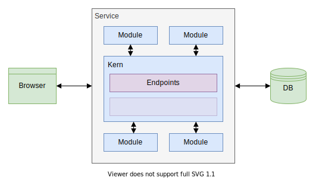
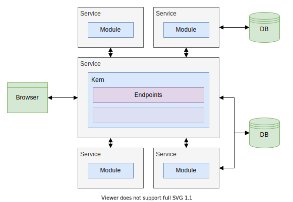
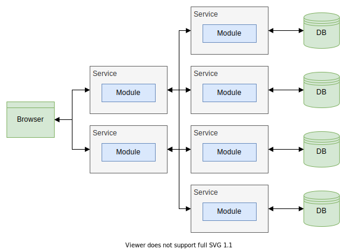

#### Architekturen - Monolith
- Alle Aspekte der Anwendung in einem Projekt
- Keine Trennung zwischen Fachlichkeiten
- Keine externen Abhängigkeiten zur Laufzeit
Architekturen - Modulith

#### Architekturen - Modulith
- Unterteilung der Anwendung in Fachlichkeiten
- Auslagerung der Fachlichkeiten in Module
- Module definieren öffentliche Schnittstellen
- Auslagerung in Form von Package, Modul, Projekt
- Keine Auslagerung zur Laufzeit
- Zusammengeführt durch Kern
Architekturen - Services

#### Architekturen - Services
- Modulith als Kern
- Auslagerung einzelner Module in Services
- Services haben eigene Datenhaltung
Architekturen - Microservices

#### Architekturen - Microservices
- Auslagerung jedes Modules in Services
- Expliziter Kern durch implizite Abhängigkeiten zwischen Services ersetzt
- Services replizieren Daten in eigener Datenhaltung
#### Vergleich - Wartungsaufwand
- Einführung neuer Features
- Entfernung alter Features
- Behebung von Fehler
- Aktualisierung der Abhängigkeiten
- Refactoring
#### Vergleich - Personalaufwand
- Teamgröße sowie Teamanzahl
- Erhöhte Komplexität erfordert mehr Personal
- Mehr Personal erfordert erhöhte Flexibilität
#### Vergleich - Teamgröße
| Monolith | Modulith | Services | Microservices |
|----------|----------|----------|---------------|
Klein | Klein - Groß | Mittel - Groß | Groß - Mehrere
#### Vergleich - Fazit
- Anforderungen und Teamgröße limitieren jeweils Architekturmöglichkeiten
- Architektur aus Deckung der Architekturmöglichkeiten wählen
- Teamgröße muss sich mit Anforderungen decken
#### Vergleich - Fazit
- Monolith für unbekannte Projekte
- Modulith für mehr Wartbarkeit
- Services für Skalierbarkeit
- Microservices für Zuverlässigkeit
### Spring
#### Spring
- Application Framework
- Dependency-Injection-Container
#### Spring-Boot
- Basiert auf Spring
- Erweitert um Java EE
- Convention-over-Configuration
- Annotation-Base Configuration
- Spring ursprünglich eigentlich XML
#### Bootstrap
- Aufbau des Objektgraphen
- Zwei primäre Quellen für Objekte
- Components
- Configurations
- Objektgraph ist normalerweise statisch
- Objektgraph erlaubt dynamische Erweiterung
### Bootstrap
#### Bootstrap - Verwendung
- `@SpringBootApplication` zur Deklaration des Einstiegspunkt
- `@ComponentScan` für komplexere Umstände
#### Bootstrap - Beispiel
```java
@SpringBootApplication
public class MySpringApplication {
public static void main(String[] args) {
SpringApplication.run(MySpringApplication.class, args);
}
}
```
#### Bootstrap - Details
`@SpringBootApplication`
- `scanBasePackages` Base-Package für alle Configurations und Components
- Default ist das aktuelle Package
#### Components
- Direkte Deklaration von Objekten
- Erzeugung durch den Dependency-Injection-Container
#### Components - Verwendung
- `@Component` zur Deklaration
- `@Order` zur Definition der Präzedenz
#### Components - Beispiel
```java
@Component
public class MyComponent {
...
}
```
#### Components - Aliase
- `@Controller` für Endpoints
- `@RestController` für ReST-Endpoints
- `@Services` für Services
- `@Repository` für Datenbankschnittstellen
#### Configurations
- Indirekte Deklaration von Objekten
- Sowie Ändern und Erweitern bestehender Objekte
- Aufruf durch den Dependency-Injection-Container
#### Configurations - Verwendung
- `@Configuration` zur Deklaration einer Konfiguration
- `@Bean` zur Deklaration eines Objektes
- `@Order` zur Definition der Präzedenz
#### Configurations - Beispiel
```java
@Configuration
public class MyConfiguration {
@Bean
public MyComponent createComponent(){
...
}
}
```
#### Referenzierung
- Benötigt Aufruf durch Dependency-Injection-Container
- Auflösung der Referenzen über Typ
- Mehrfach vorhandene Objekt über Namen ggf. Classifier
- Boostrap scheitert wenn Referenz nicht auslösbar
- keine entsprechendes Objekt
- mehrere entsprechende Objekte
#### Referenzierung - Verwendung
- `@Autowired` zur Markierung eines Parameters
#### Referenzierung - Beispiel
```java
@Component
public class MyComponentWithDependency {
public MyComponentWithDependency(
@Autowired MyRequiredComponent component
) {
...
}
}
```
#### Referenzierung - Beispiel
```java
@Configuration
public class MyConfiguration {
@Bean
public MyComponentWithDependency createDependantComponent(
@Autowired MyRequiredComponent component
) {
...
}
}
```
#### Referenzierung - Details
`@Autowired`
- `required` für optionale Objekte
### Spring Schichten
#### Spring Schichten
- Frontend
- Middleware
- Backend
#### Controller
- Schnittstelle zur Außenwelt
- Abstraktes Konstrukt
- Verschiedene Arten von Schnittstellen möglich (ReST, GraphQL etc.)
#### Controller - Einordnung
- Frontend
- Referenziert Services
- Wird von niemanden referenziert
#### Controller - Verwendung
- `@Controller` zur Deklaration
#### Rest-Controller
- Konkrete Ausprägung eines Controllers
- ReST basiert
- Definiert die Endpoints der Anwendung
#### Rest-Controller - Verwendung
- `@RestController` zur Deklaration
#### Rest-Controller - Verwendung
- `@RequestMapping` zur Definition des Endpoints
- `@PathVariable` für Pfad-Variablen
- `@QueryParam` für Query-Parameter
- `@RequestBody` für Bodies
- `@ResponseStatus` für besondere Http-Status
#### Rest-Controller - Beispiel
```java
@RestController
@RequestMapping(
path = "/notes",
produces = MediaType.APPLICATION_JSON
)
public class MyNoteController {
...
}
```
#### Service
- Implementiert Businesslogik
- Oftmals durch ein Interface abstrahiert
#### Service - Einordnung
- Middleware
- Referenziert Repositories und andere Services
- Wird von Controller und Services referenziert
#### Service - Verwendung
- `@Service` zur Deklaration
#### Service - Beispiel
```java
@Service
public interface MyNoteService {
...
}
```
#### Service - Beispiel
```java
@Service
public class MyNoteServiceImpl implements MyNoteService {
...
}
```
#### Repository
- Implementiert Datenbankschnittstelle für eine Entity
- Abstraktes Konstrukt
- Verschiedene Arten von Datenbankschnittstelle möglich (JPA, ElasticSearch etc.)
#### Repository - Einordnung
- Backend
- Referenziert andere Repositories
- Wird von Services referenziert
#### Repository - Verwendung
- `@Repository` zur Deklaration
#### JPA-Repository
- Basiert auf Java-Persistence-API
- Implementation per Proxy
- Erweiterung durch Annotationen
#### JPA-Repository - Verwendung
- `@Repository` zur Deklaration
- `@Query` zur Definition komplexer Queries
#### JPA-Repository - Beispiel
```java
@Repository
public interface MyNoteRepository
extends JpaRepository<Note, Long> {
...
}
```
#### JPA-Repository - Beispiel
```java
List<Note> findAll();
```
#### JPA-Repository - Beispiel
```java
Note findById(Long id);
```
#### JPA-Repository - Beispiel
```java
@Query("SELECT n FROM Notes n "
+ "WHERE n.tag IN (:tags) "
+ "AND n.creationDate >= :timestamp")
List<Note> findWithTagsAfter(
String[] tags,
OffsetDateTime timestamp
);
```
#### JPA-Repository - Better Practice
- Vielzahl an vordefinierten Operationen
- Wrapper-Klasse für explizite Schnittstellen
- Mehr Aufwand - Mehr Konsistenz
- Projekt-spezifisches Wording
- Verändern der Methodensignatur
- Keine ungewollten Operationen
#### JPA-Repository - Beispiel
```java
@Repository
public class MyNoteRepository {
private final MySpringNoteRepository delegate;
public MyNoteRepository(
@Autowired MySpringNoteRepository delegate
) {
this.delegate = delegate;
}
public @Nullable Note find(@NotNull Long id) {
return delegate.findById(id).orElse(null)
}
}
```
### TODO Anwendung
#### TODO Anwendung - Anforderungen
- TODOs abfragen
- TODO anlegen
- TODO als Done markieren
- TODO löschen
#### TODO Anwendung - Anforderungen
TODOs abfragen
`GET /todo`
#### TODO Anwendung - Anforderungen
TODO anlegen
`POST /todo`
#### TODO Anwendung - Anforderungen
TODO als Done markieren
`PUT /todo/{id}`
#### TODO Anwendung - Anforderungen
TODO löschen
`DELETE /todo/{id}`